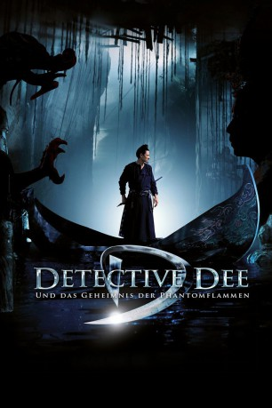

#2619 Detective Dee und das Geheimnis der Phantomflammen
Alternativ: Detective Dee: Mystery of the Phantom Flame (Englischer Titel)
 
 IMDB-Wertung: 6.6 / 10
IMDB-Wertung: 6.6 / 10  Metascore: 75
Metascore: 75 
China im Jahr 690: In der Hauptstadt Luoyang City soll Wu Zetian zur ersten Kaiserin gekrönt werden. Eine 70 Meter große Buddhastatue muss noch rechtzeitig zur feierlichen Krönungszeremonie fertiggestellt werden, doch plötzlich gehen sowohl der Bauleiter, als auch der Polizeiminister in Flammen auf. Um die mysteriösen Vorkommnisse aufzuklären, befreit Wu Zetian den von ihr höchstpersönlich eingesperrten Detective Dee. Obwohl er ein offener Gegner ihrer Politik ist, nimmt er aus Interesse an diesem so geheimnisvollen wie magischen Fall die Ermittlungen auf.
Jahr: 2010
Dauer: 119 Minuten
FSK: 12
Land: China Studio: Koch MediaTonspuren:
Untertitel: Deutsch,
Auflösung: 1080p (1920x816) Größe: 5959 MB
Genre: Action, Drama, Abenteuer, Fantasy, Mystery
Regisseur:  Hark Tsui
Hark Tsui
Drehbuch: Chia-Lu Chang, Kuo-Fu Chen, Qianyu Lin
Soundtrack: Peter Kam
Darsteller:
 Tony Ka Fai Leung als Shatuo Zhong
Tony Ka Fai Leung als Shatuo Zhong- Chao Deng als Pei Donglai
 Carina Lau als Empress Wu Zetian
Carina Lau als Empress Wu Zetian Bingbing Li als Shangguan Jing'er
Bingbing Li als Shangguan Jing'er Andy Lau als Detective Dee
Andy Lau als Detective Dee- Yanming Jiang als Undertaker
- Teddy Robin Kwan als Wang Lu - after face-lift
- Xiao Chen als Lu Li
- Veronica Faye Foo als Wife of Jia Yi
- Jean-Michel Casanova als General Aspar
- Sos Haroyan als Assistant to Umayyad Ambassador
- Jialin Zhao als Interpreter
- Yan Qin als Jia Yi
- Jinshan Liu als Xue Yong
- Aaron C. Shang als Shaizi
- Deshun Wang als Xiazi Ling
- Mickey He als Prison Officer
- Lu Yao als Li Xiao
- Yonggang Huang als Zhang Xun
 Richard Ng als Wang Lu - before face-lift
Richard Ng als Wang Lu - before face-lift- Nan Xu als Chamberlain
- Jin Chai als Qiu Shenji
- Yingxin Shen als
- Qian Jiang als
- Chia-lu Chang als
- Hongjun Cheng als
- Xuehai Jiao als
- Ming Lu als
- Jinhu Jia als
- Zhengbing Yuan als
Datei: X:\HD-Eastern-Collections\Detective Dee\Detective Dee und das Geheimnis der Phantomflammen (2010, FSK12, 1920x816).mkv seit 26.11.2015
Festplatte: HD Eastern+Western
 Alle Filme aus Gruppe 'HD-Eastern-Collections\Detective Dee'
Alle Filme aus Gruppe 'HD-Eastern-Collections\Detective Dee'